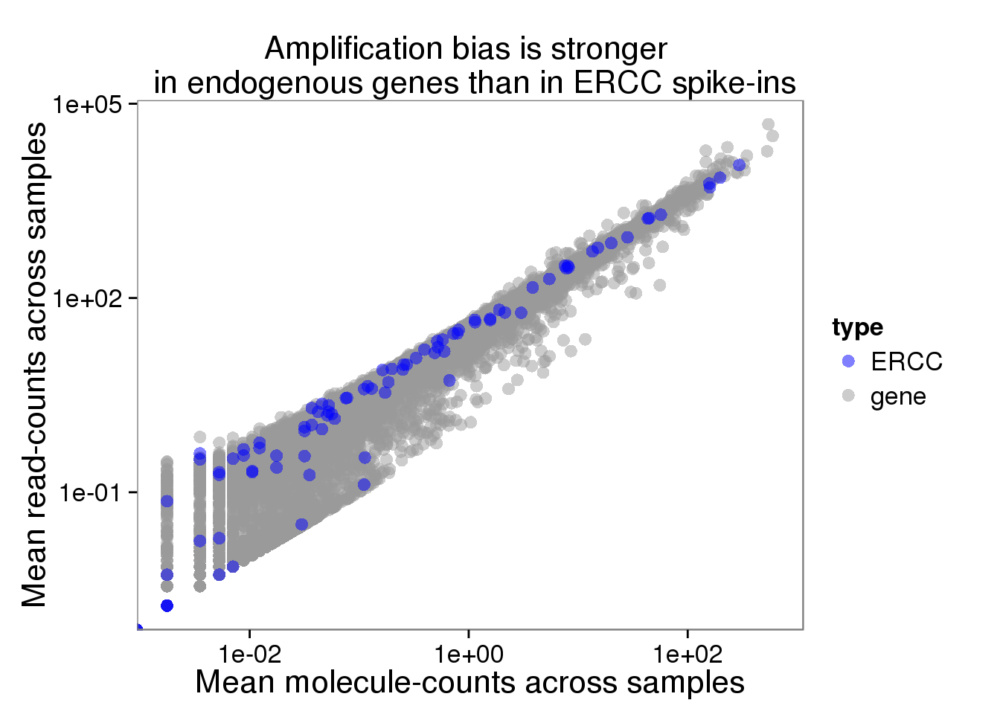
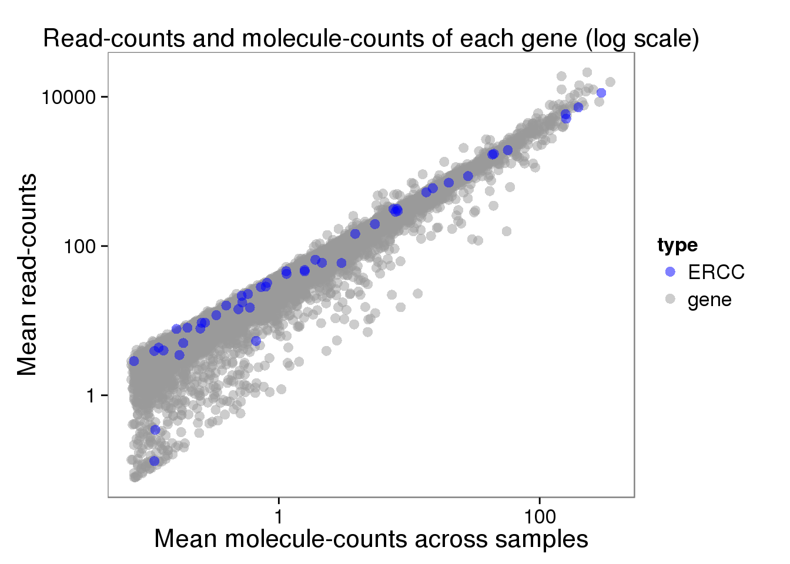
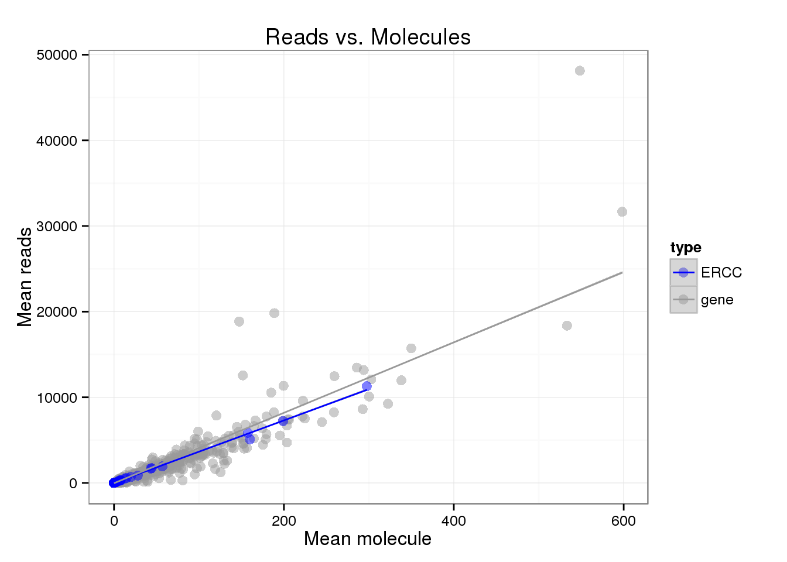
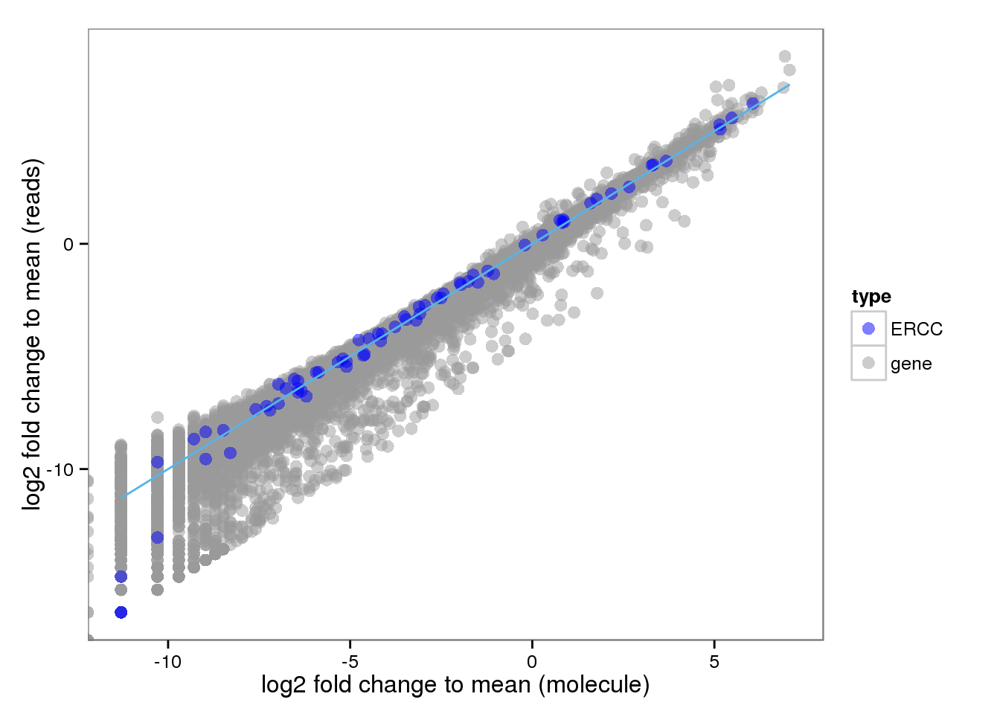
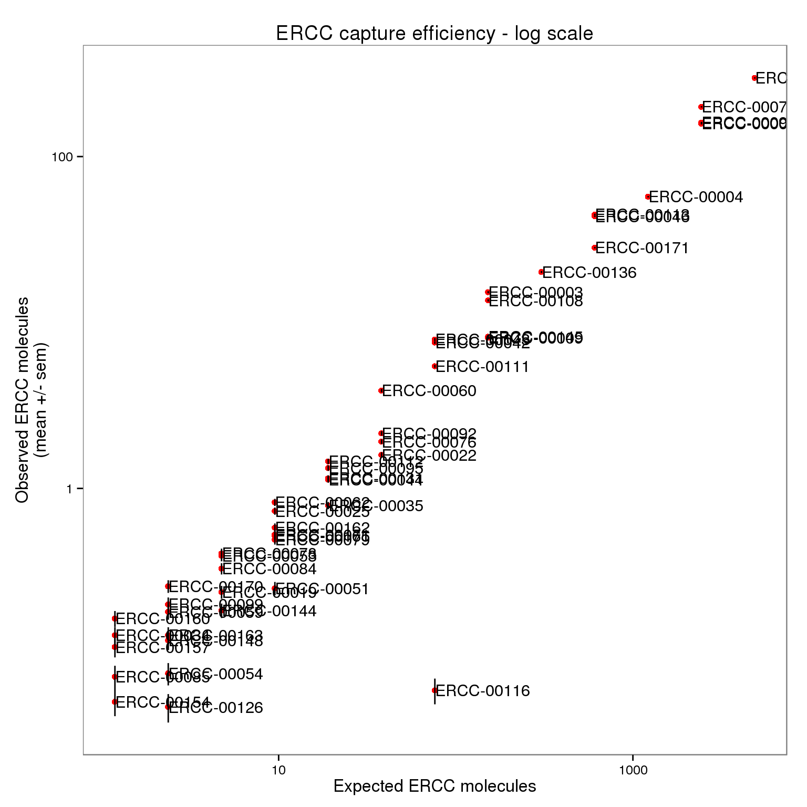
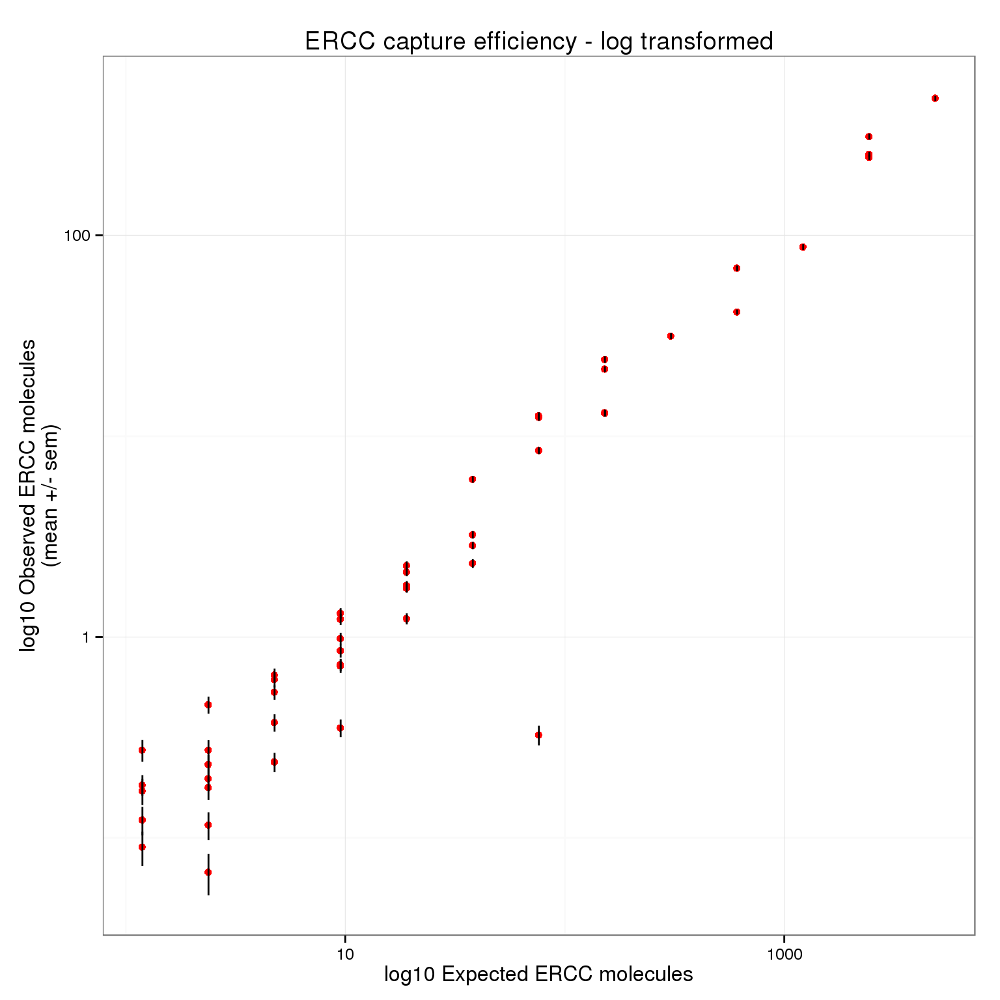
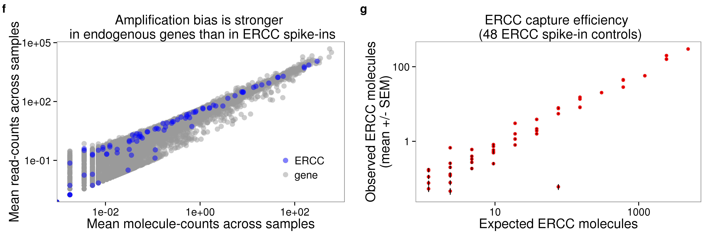

Last updated: 2016-02-02
Code version: 9501eaeb09744a248aad0a918db0e7671688586a
library("biomaRt")
library("data.table")
library("dplyr")
library("limma")
library("edgeR")
library("ggplot2")
library("grid")
library("cowplot")
theme_set(theme_bw(base_size = 12))
source("functions.R")Input ERCC molecule counts calculated in capture efficiency.
ercc <- read.table("../data/expected-ercc-molecules.txt", header = TRUE,
stringsAsFactors = FALSE)
head(ercc) id conc_mix1 ercc_molecules_well
1 ERCC-00130 30000.000 4877.93485
2 ERCC-00004 7500.000 1219.48371
3 ERCC-00136 1875.000 304.87093
4 ERCC-00108 937.500 152.43546
5 ERCC-00116 468.750 76.21773
6 ERCC-00092 234.375 38.10887Input annotation.
anno <- read.table("../data/annotation.txt", header = TRUE,
stringsAsFactors = FALSE)
head(anno) individual replicate well batch sample_id
1 NA19098 r1 A01 NA19098.r1 NA19098.r1.A01
2 NA19098 r1 A02 NA19098.r1 NA19098.r1.A02
3 NA19098 r1 A03 NA19098.r1 NA19098.r1.A03
4 NA19098 r1 A04 NA19098.r1 NA19098.r1.A04
5 NA19098 r1 A05 NA19098.r1 NA19098.r1.A05
6 NA19098 r1 A06 NA19098.r1 NA19098.r1.A06Input read counts and filter for quality cells.
reads <- read.table("../data/reads.txt", header = TRUE,
stringsAsFactors = FALSE)
quality_single_cells <- scan("../data/quality-single-cells.txt", what = "character")
reads <- reads[, colnames(reads) %in% quality_single_cells]Input read counts in high quality cells for filtered genes
reads_filter <- read.table("../data/reads-filter.txt", header = TRUE,
stringsAsFactors = FALSE)Input molecule counts and filter for quality cell.
molecules <- read.table("../data/molecules.txt", header = TRUE,
stringsAsFactors = FALSE)
molecules <- molecules[, colnames(molecules) %in% quality_single_cells]Input molecule counts in high quality cells for filtered genes
molecules_filter <- read.table("../data/molecules-filter.txt", header = TRUE,
stringsAsFactors = FALSE)Compare the means of each gene obtained via the different methods.
## calculate mean
reads_mean <- apply(reads, 1, mean)
molecules_mean <- apply(molecules, 1, mean)
distribution <- data.frame(reads_mean, molecules_mean)
reads_filter_mean <- apply(reads_filter, 1, mean)
molecules_filter_mean <- apply(molecules_filter, 1, mean)
distribution_filter <- data.frame(reads_filter_mean, molecules_filter_mean)
## correlation between reads and molecules
cor(distribution) reads_mean molecules_mean
reads_mean 1.0000000 0.9191001
molecules_mean 0.9191001 1.0000000cor(distribution_filter) reads_filter_mean molecules_filter_mean
reads_filter_mean 1.0000000 0.9361685
molecules_filter_mean 0.9361685 1.0000000## select ERCC
distribution$type <- ifelse(grepl("ERCC", rownames(distribution)), "ERCC", "gene")
distribution_filter$type <- ifelse(grepl("ERCC", rownames(distribution_filter)), "ERCC", "gene")
## color palette
cbPalette <- c("#0000FF", "#999999", "#990033", "#F0E442", "#0072B2", "#D55E00", "#CC79A7", "#009E73")
## plots
plot_mean_log <- ggplot(distribution, aes(x = molecules_mean, y = reads_mean, col = type)) +
geom_point(size = 3, alpha = 0.5) +
scale_colour_manual(values=cbPalette) +
labs(x = "Mean molecule", y = "Mean reads", title = "Reads vs. Molecules - log scale") +
scale_x_log10() +
scale_y_log10()
plot_mean_log
plot_mean_filter_log <- ggplot(distribution_filter, aes(x = molecules_filter_mean, y = reads_filter_mean, col = type)) +
geom_point(size = 3, alpha = 0.5) +
scale_colour_manual(values=cbPalette) +
labs(x = "Mean molecule", y = "Mean reads", title = "Reads vs. Molecules - log scale (filtered)") +
scale_x_log10() +
scale_y_log10()
plot_mean_filter_log
plot_mean <- ggplot(distribution, aes(x = molecules_mean, y = reads_mean, col = type)) +
geom_point(size = 3, alpha = 0.5) +
scale_colour_manual(values=cbPalette) +
labs(x = "Mean molecule", y = "Mean reads", title = "Reads vs. Molecules") +
geom_smooth(method = "lm")
plot_mean
Look at the distribution of fold change to mean. As being reported by others, the lowly expressed genes show divergent read and molecule counts
## calculate fold change to mean
distribution$fold_change_read <- log2(reads_mean/mean(reads_mean))
distribution$fold_change_molecule <- log2(molecules_mean/mean(molecules_mean))
plot_distribution <- ggplot(distribution, aes(x = fold_change_molecule, y = fold_change_read, col = type)) +
geom_point(size = 3, alpha = 0.5) +
scale_colour_manual(values=cbPalette) +
stat_function(fun= function(x) {x}, col= "#56B4E9") +
labs(x = "log2 fold change to mean (molecule)", y = "log2 fold change to mean (reads)")
plot_distribution
Use only those 50 ERCC genes with at least 1 expected molecule per well.
ercc_list <- list()
for (spike in ercc$id[ercc$ercc_molecules_well >= 1]) {
if (spike %in% rownames(molecules)) {
ercc_list$id <- c(ercc_list$id, spike)
ercc_list$observed_mean <- c(ercc_list$observed_mean,
mean(as.numeric(molecules[spike, ])))
ercc_list$observed_sem <- c(ercc_list$observed_sem,
sd(as.numeric(molecules[spike, ])) /
sqrt(ncol(molecules)))
ercc_list$expected <- c(ercc_list$expected,
ercc$ercc_molecules_well[ercc$id == spike])
}
}
ercc_plot <- as.data.frame(ercc_list, stringsAsFactors = FALSE)
str(ercc_plot)'data.frame': 50 obs. of 4 variables:
$ id : chr "ERCC-00130" "ERCC-00004" "ERCC-00136" "ERCC-00108" ...
$ observed_mean: num 297.8089 57.2786 20.1589 13.5911 0.0607 ...
$ observed_sem : num 2.8525 0.6367 0.285 0.2146 0.0107 ...
$ expected : num 4877.9 1219.5 304.9 152.4 76.2 ...cor(ercc_plot$observed_mean, ercc_plot$expected)[1] 0.9914999Use molecule filter file.
ercc_list_filter <- list()
for (spike in ercc$id[ercc$ercc_molecules_well >= 0]) {
if (spike %in% rownames(molecules_filter)) {
ercc_list_filter$id <- c(ercc_list_filter$id, spike)
ercc_list_filter$observed_mean <- c(ercc_list_filter$observed_mean,
mean(as.numeric(molecules_filter[spike, ])))
ercc_list_filter$observed_sem <- c(ercc_list_filter$observed_sem,
sd(as.numeric(molecules_filter[spike, ])) /
sqrt(ncol(molecules_filter)))
ercc_list_filter$expected <- c(ercc_list_filter$expected,
ercc$ercc_molecules_well[ercc$id == spike])
}
}
ercc_filter_plot <- as.data.frame(ercc_list_filter, stringsAsFactors = FALSE)
str(ercc_filter_plot)'data.frame': 43 obs. of 4 variables:
$ id : chr "ERCC-00130" "ERCC-00004" "ERCC-00136" "ERCC-00108" ...
$ observed_mean: num 297.81 57.28 20.16 13.59 2.15 ...
$ observed_sem : num 2.8525 0.6367 0.285 0.2146 0.0677 ...
$ expected : num 4877.9 1219.5 304.9 152.4 38.1 ...cor(ercc_filter_plot$observed_mean, ercc_filter_plot$expected)[1] 0.9913803p_efficiency <- ggplot(ercc_plot, aes(x = expected, y = observed_mean, label = id)) +
geom_point(col = "red") +
geom_errorbar(aes(ymin = observed_mean - observed_sem,
ymax = observed_mean + observed_sem), width = 0) +
labs(x = "Expected ERCC molecules",
y = "Observed ERCC molecules\n(mean +/- sem)",
title = "ERCC capture efficiency")
p_efficiency_plot <- p_efficiency + scale_x_log10() +
scale_y_log10() +
labs(x = "Expected ERCC molecules",
y = "Observed ERCC molecules\n(mean +/- sem)",
title = "ERCC capture efficiency - log scale")
p_efficiency_plot + geom_text(hjust = 0, nudge_x = 0.05, size = 4)
p_efficiency_filter_plot <- ggplot(ercc_filter_plot, aes(x = expected, y = observed_mean)) +
geom_point(col = "red") +
geom_errorbar(aes(ymin = observed_mean - observed_sem,
ymax = observed_mean + observed_sem), width = 0) +
scale_x_log10() + scale_y_log10() +
labs(x = "Expected ERCC molecules",
y = "Observed ERCC molecules\n(mean +/- sem)",
title = "ERCC capture efficiency - log scale (filtered)")
p_efficiency_filter_plot
ercc_index <- grep("ERCC", rownames(molecules_filter))
length(ercc_index)[1] 43efficiency <- numeric(length = ncol(molecules_filter))
total_ercc_molecules <- sum(ercc_filter_plot$expected)
for (i in 1:ncol(molecules_filter)) {
efficiency[i] <- sum(molecules_filter[ercc_index, i]) / total_ercc_molecules
}
summary(efficiency) Min. 1st Qu. Median Mean 3rd Qu. Max.
0.03943 0.05448 0.06103 0.06557 0.07591 0.12080 theme_set(theme_bw(base_size = 12))
plot_grid(plot_mean_filter_log + theme(legend.position = c(.85,.25)) + labs (col = ""),
p_efficiency_plot + theme(legend.position = "none"),
plot_mean_log + theme(legend.position = c(.85,.25)) + labs (col = ""),
p_efficiency_filter_plot + theme(legend.position = "none"),
labels = LETTERS[4:7])
sessionInfo()R version 3.2.0 (2015-04-16)
Platform: x86_64-unknown-linux-gnu (64-bit)
locale:
[1] LC_CTYPE=en_US.UTF-8 LC_NUMERIC=C
[3] LC_TIME=en_US.UTF-8 LC_COLLATE=en_US.UTF-8
[5] LC_MONETARY=en_US.UTF-8 LC_MESSAGES=en_US.UTF-8
[7] LC_PAPER=en_US.UTF-8 LC_NAME=C
[9] LC_ADDRESS=C LC_TELEPHONE=C
[11] LC_MEASUREMENT=en_US.UTF-8 LC_IDENTIFICATION=C
attached base packages:
[1] grid stats graphics grDevices utils datasets methods
[8] base
other attached packages:
[1] cowplot_0.3.1 ggplot2_1.0.1 edgeR_3.10.2 limma_3.24.9
[5] dplyr_0.4.2 data.table_1.9.4 biomaRt_2.24.0 knitr_1.10.5
loaded via a namespace (and not attached):
[1] Rcpp_0.12.0 formatR_1.2 GenomeInfoDb_1.4.0
[4] plyr_1.8.3 bitops_1.0-6 tools_3.2.0
[7] digest_0.6.8 RSQLite_1.0.0 evaluate_0.7
[10] gtable_0.1.2 DBI_0.3.1 yaml_2.1.13
[13] parallel_3.2.0 proto_0.3-10 httr_0.6.1
[16] stringr_1.0.0 S4Vectors_0.6.0 IRanges_2.2.4
[19] stats4_3.2.0 Biobase_2.28.0 R6_2.1.1
[22] AnnotationDbi_1.30.1 XML_3.98-1.2 rmarkdown_0.6.1
[25] reshape2_1.4.1 magrittr_1.5 scales_0.2.4
[28] htmltools_0.2.6 BiocGenerics_0.14.0 MASS_7.3-40
[31] assertthat_0.1 colorspace_1.2-6 labeling_0.3
[34] stringi_0.4-1 RCurl_1.95-4.6 munsell_0.4.2
[37] chron_2.3-45